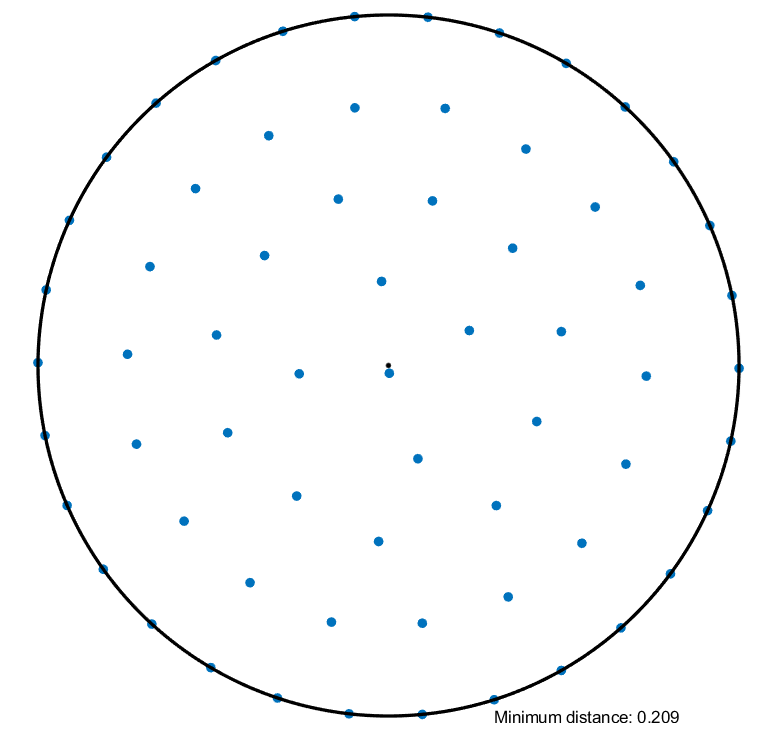

Lifts: parameterizations made easy
Use lifts to compose an optimization problem with a parameterization
importmanopt
Lifts were added to Manopt late June 2024. To use them, you need a sufficiently recent version of the code (e.g., from github). Lifts are stored in a new folder /manopt/lifts that needs to be on Matlab’s path. To ensure this, call importmanopt.
General idea
At first sight, optimization on manifolds is restricted to optimization problems on smooth sets. Notwithstanding, we can use smooth parameterizations of (possibly) nonsmooth sets to extend the realm of applications. See built-in examples in Table 2. This eases the process of working with:
- constraints,
- nonsmooth sets, or simply
- a change of variables.
Consider the following commutative diagram.
The principal objects in this diagram are in black. They are as follows:
- \(\calM\) is a Riemannian manifold.
- \(\calN\) is a Riemannian manifold too (often, it is a Euclidean space).
- \(f \colon \calN \to \reals\) is the cost function we wish to minimize on some subset.
- \(\varphi \colon \calM \to \calN\) is the lift or parameterization: its image \(\calX = \varphi(\calM)\) is a subset of \(\calN\).
- \(g = f \circ \varphi \colon \calM \to \reals\) is the function we will actually minimize (without restriction on \(\calM\)).
Notice that by minimizing \(g\) on \(\calM\), we are effectively minimizing \(f\) on \(\calX\), because \(g(y) = f(\varphi(y))\) so that we only ever evaluate \(f\) at points of the form \(x = \varphi(y)\) which, by definition, are in \(\calX\).
Moreover, if \(f\) and \(\varphi\) are both smooth, then so is \(g\) by composition.
This means that even if \(\calX\) is a nonsmooth set, we can still use Manopt to (try to) minimize \(f\) on \(\calX \subseteq \calN\).
We can do this explicitly by constructing a problem structure for \(g\) on \(\calM\). Alternatively, we can construct a problem structure for \(f\) on \(\calN\) and compose it with \(\varphi\) by using manoptlift. To do so, this tool requires some information about \(\varphi\) and its derivatives: this is all stored in a lift structure. Manopt comes with some built-in lifts (see below), and users can create their own.
Upstairs, downstairs and manoptlift
There are now two related optimization problems to consider. The problem downstairs is \[ \min_{x \in \calN} f(x) \quad \textrm{ subject to } \quad x \in \calX, \] where \(\calX = \varphi(\calM) \subseteq \calN\) is the image of the lift and \(f \colon \calN \to \reals\) is the cost function. The problem upstairs is \[ \min_{y \in \calM} g(y), \] where \(g = f \circ \varphi \colon \calM \to \reals\). The names “upstairs” and “downstairs” are reminiscent of the diagram in Figure 1, and echo the meaning of a “lift” as a tool to go from downstairs to upstairs.
In order to solve the downstairs problem, we first go through the following steps:
- Build a problem structure
downstairsfor \(f \colon \calN \to \reals\) (ignoring the constraint \(x \in \calX\)). - Build a
liftstructure for \(\varphi \colon \calM \to \calN\), e.g., by selecting an existing one. - Call
upstairs = manoptlift(downstairs, lift).
The outcome is a problem structure upstairs which encodes \(g \colon \calM \to \reals\) with \(g = f \circ \varphi\). Then,
- Call a solver on the upstairs problem, e.g.,
y = trustregions(upstairs). - Map \(y\) down to \(x = \varphi(y)\) with
x = lift.phi(y).
The resulting \(x\) is guaranteed to be in \(\calX\) (by construction). If \(y\) is optimal, so is \(x\).
There are several ways to call manoptlift:
[upstairs, downstairs] = manoptlift(downstairs, lift)
[upstairs, downstairs] = manoptlift(downstairs, lift, 'AD')
[upstairs, downstairs] = manoptlift(downstairs, lift, 'noAD')
[upstairs, downstairs] = manoptlift(downstairs, lift, 'ADnohess')- The third input (optional) is a string:
- If it is omitted, or
'', or'noAD', there is no effect. - If it is
'AD', then automatic differentiation is used ondownstairswithmanoptADbeforeupstairsis built. - If it is
'ADnohess', thenmanoptADis called with thenohessoption.
- If it is omitted, or
- The
downstairsstructure is available as second output (optional) becausemanoptliftmay modify it in the following circumstances:- If
downstairs.Mis omitted, then it is set tolift.N. - If automatic differentiation is used.
- If
Some lifts can also be called with a regularizer: see below. The regularizer is activated with the lambda input to manoptlift (a real number, usually positive):
[upstairs, downstairs] = manoptlift(downstairs, lift, [], lambda)Because of how caching is currently handled, it is not safe to lift a lifted problem, that is, to compose lifts. If you need this feature, let us know on the forum.
Landscape relations
A point \(y \in \calM\) maps to a point \(x = \varphi(y) \in \calX\). With respect to the landscapes of the cost functions \(g = f \circ \varphi\) and \(f\), we may be interested in the following properties:
- global \(\Rightarrow\) global: if \(y\) is a global minimum upstairs, then \(x\) is a global minimum downstairs. This is always true, simply because \(\varphi\) is a surjection to \(\calX\).
- local \(\Rightarrow\) local: if \(y\) is a local minimum upstairs, then \(x\) is a local minimum downstairs. This is true if and only if \(\varphi\) is an open map from \(\calM\) to \(\calX\).
- 1 \(\Rightarrow\) 1: if \(y\) is a first-order critical point upstairs, then \(x\) is a first-order stationary point downstairs. This is not often the case. In particular, it requires the tangent cone to \(\calX\) at \(x\) to be linear.
- 2 \(\Rightarrow\) 1: if \(y\) is a second-order critical point upstairs, then \(x\) is a first-order stationary point downstairs. This is more common.
Context, proofs and general theory are developed in the following paper:
Eitan Levin, Joe Kileel, Nicolas Boumal
The effect of smooth parametrizations on nonconvex optimization landscapes
Mathematical Programming, 2024
Many of the lifts included in Manopt are treated as explicit examples in that paper.
Lift structures: what’s in them?
The lift structure must provide enough information about \(\varphi\) so that Manopt can deduce how to compute \(g = f \circ \varphi\), its gradient and (ideally) its Hessian, based on the corresponding information about \(f\). Table 1 lists the fields in lift, including manifold structures for \(\calM\) and \(\calN\), and function handles for \(\varphi\) and more.
Let \(y \in \calM\) and \(x = \varphi(y) \in \calN\). By the chain rule, for all \(v \in \T_y\calM\) we have \[ \D g(y)[v] = \D(f \circ \varphi)(y)[v] = \D f(x)[\D\varphi(y)[v]], \] where \(\D\varphi(y) \colon \T_y\calM \to \T_x\calN\) is the differential of \(\varphi\) at \(y\). By definition of the Riemannian gradient, then by definition of the adjoint of a linear map (indicated by a star \(\cdot^*\)), this yields \[ \inner{\grad g(y)}{v}_y = \inner{\grad f(x)}{\D\varphi(y)[v]}_x = \inner{\D\varphi(y)^*[\grad f(x)]}{v}_y. \] This holds for all \(v\). Thus, \[ \grad g(y) = \D\varphi(y)^*[\grad f(x)]. \] This illustrates how we can get the gradient of \(g\) from that of \(f\) provided the lift gives us access to \(\D\varphi(y)^*\). For the Hessian, additional computations shown later on this page tell us what else needs to be included: see Eq. 2.
lift structure. See also Table 4.
| Name | Field usage | Functionality |
|---|---|---|
| \(\calM\) | lift.M |
Manifold structure from a factory (“upstairs”) |
| \(\calN\) | lift.N |
Manifold structure from a factory (“downstairs”) |
| \(\varphi\) | x = lift.phi(y) |
Computes the image of \(y \in \calM\) through \(\varphi \colon \calM \to \calN\) |
| \(\D\varphi(y)\) | u = lift.Dphi(y, v) |
Differential of \(\varphi\) at \(y \in \calM\) along \(v \in \T_y\calM\). The output is \(u = \D\varphi(y)[v]\) in \(\T_x\calN\) where \(x = \varphi(y)\). |
| \(\D\varphi(y)^*\) | v = lift.Dphit(y, u) |
Adjoint of \(\D\varphi(y)\) with respect ot the inner products on \(\T_y\calM\) and \(\T_x\calN\), where \(x = \varphi(y)\). Thus, \[\inner{\D\varphi(y)[v]}{u}_x = \inner{v}{\D\varphi(y)^*[u]}_y.\] |
| \(\Hess h_w(y)\) | s = lift.hesshw(y, v, w) |
Given \(y \in \calM\) and \(w \in \T_x\calN\) where \(x = \varphi(y)\), choose \(q_w \colon \calN \to \reals\) such that \(\grad q_w(x) = w\) (for the specified \(x\)). Let \(h_w = q_w \circ \varphi \colon \calM \to \reals\). Then \(s = \Hess h_w(y)[v]\). If \(\calN\) is Euclidean, a typical choice is \(q_w = \inner{\cdot}{w}_\calN\). |
| \(\Hess q_w(x)\) | s = lift.hessqw(x, u, w) |
Given \(x \in \calN\) and \(w \in \T_x\calN\), choose \(q_w \colon \calN \to \reals\) such that \(\grad q_w(x) = w\) (for the specified \(x\)). Then \(s = \Hess q_w(x)[u]\). If \(\calN\) is Euclidean, a typical choice is \(q_w = \inner{\cdot}{w}_\calN\), in which case \(\Hess q_w(x) = 0\). If the field is omitted, it is assumed to be zero. |
| \(\varphi\) or \(\bar{\varphi}\)? | lift.embedded |
Boolean flag set to false (by default) if all of the above indeed pertains to \(\varphi\), and set to true if the above instead describes \(\bar{\varphi} \colon \calE \to \calN\), where \(\calE\) is the embedding space for \(\calM\) (as specified in the documentation for the corresponding factory), as a smooth extension such that \(\bar{\varphi}|_\calM = \varphi\). See Figure 1. In that case, the lift enables computation of \(\grad \bar{g}\) and \(\Hess \bar{g}\), which \(\calM\) can then convert to \(\grad g\) and \(\Hess g\) using egrad2rgrad and ehess2rhess. |
Available lifts
A number of lifts are readily available in Manopt, making it possible to optimize over various nonsmooth sets \(\calX = \varphi(\calM)\). We list them in a table now, and detail the corresponding lifts below with some examples.
| Name | \(\calX = \varphi(\calM)\) | lift |
|---|---|---|
| Cube | \(\{ x \in \Rn : -1 \leq x_{i} \leq 1 \, \forall i \}\) | cubeslift(n) |
| Cubes | \(\{ X \in \Rnm : -1 \leq X_{ij} \leq 1 \, \forall i,j \}\) | cubeslift(n, m) |
| Ball | \(\{ x \in \Rn : \|x\| \leq 1 \}\) | ballslift(n) |
| Balls | \(\{ X \in \Rnm : \|X_{:, i}\| \leq 1 \, \forall i \}\) | ballslift(n, m) |
| Simplex | \(\{ x \in \Rn : x_1 + \cdots + x_n = 1, x_i \geq 0 \, \forall i \}\) | hadamardlift('simplex', n) |
| Column stochastic | \(\{ X \in \Rnm : X^\top\One = \One, X_{ij} \geq 0 \}\) | hadamardlift('colstochastic', n, m) |
| Row stochastic | \(\{ X \in \Rnm : X\One = \One, X_{ij} \geq 0 \}\) | hadamardlift('rowstochastic', n, m) |
| Nonnegative orthant | \(\{ X \in \Rnm : X_{ij} \geq 0 \, \forall i,j \}\) | hadamardlift('nonnegative', n, m) |
| Bounded-rank | \(\{ X \in \Rmn : \rank(X) \leq r \}\) | burermonteiroLRlift(m, n, r) |
| Bounded-rank, semidefinite | \(S_n^p \triangleq \{ X \in \Rnn : X \succeq 0, \rank(X) \leq p \}\) | burermonteirolift('free', n, p) |
| ⤷ unit trace | \(\{ X \in S_n^p : \trace(X) = 1 \}\) | burermonteirolift('unittrace', n, p) |
| ⤷ unit diagonal | \(\{ X \in S_n^p : \diag(X) = \One \}\) | burermonteirolift('unitdiag', n, p) |
| Hadamard difference | \(\Rn\) | hadamarddifferencelift(n) |
Cubes and squares
lift = cubeslift(n); % m = 1 by default
lift = cubeslift(n, m);The target set \(\calX\) consists of vectors or matrices whose entries are in the closed interval \([-1, 1]\): \[ \calX = \{ X \in \Rnm : -1 \leq X_{ij} \leq 1 \ \forall i, j \}. \] One way to think about it is as \(m\) points in the cube \([-1, 1]^n\) (the columns of \(X\)), or \(n\) points in the cube \([-1, 1]^m\) (the rows of \(X\)). This is a subset of \(\calN = \Rnm\), realized as the image of the lift \(\varphi \colon \calM \to \calN\) with \(\calM = \Rnm\) and \[ \varphi(Y) = \sin(Y), \] where \(\sin\) is applied entrywise.
This lift satisfies local \(\Rightarrow\) local and 2 \(\Rightarrow\) 1 everywhere. It also satisifies 1 \(\Rightarrow\) 1 at all \(Y \in \Rnm\) such that \(|X_{ij}| < 1\) for all \(i,j\) with \(X = \varphi(Y)\).
As an example, consider \(\min_{x \in \Rn} \frac{1}{2} x^\top A x + b^\top x\) subject to \(-1 \leq x_i \leq 1\) for \(i = 1, \ldots, n\):
n = 5;
A = randsym(n);
b = randn(n, 1);
downstairs.M = euclideanfactory(n); % optional
downstairs.cost = @(x) .5*(x'*A*x) + b'*x;
downstairs.grad = @(x) A*x + b;
downstairs.hess = @(x, xdot) A*xdot;
lift = cubeslift(n);
upstairs = manoptlift(downstairs, lift);
y = trustregions(upstairs);
x = lift.phi(y);n = 5;
A = randsym(n);
b = randn(n, 1);
downstairs.cost = @(x) .5*(x'*A*x) + b'*x;
lift = cubeslift(n);
[upstairs, downstairs] = manoptlift(downstairs, lift, 'AD');
y = trustregions(upstairs);
x = lift.phi(y);Note that \(\calX\) is convex. If \(f\) is convex (e.g., in the example above, if \(A\) is positive semidefinite), then the problem downstairs is convex. Therefore, first-order stationary points are global minima. Since the lift satisfies 2 \(\Rightarrow\) 1, it follows that second-order critical points upstairs are global minima. In other words: the problem upstairs enjoys the strict saddle property (benign nonconvexity).
Balls and disks
lift = ballslift(n) % m = 1 by default
lift = ballslift(n, m)The target set \(\calX\) consists of matrices whose columns have norm at most one: \[ \calX = \{ X \in \Rnm : X_{1i}^2 + \cdots + X_{ni}^2 \leq 1 \textrm{ for } i = 1, \ldots, m \}. \] We can think of \(X\) as \(m\) points (the columns of \(X\)) in the ball \(B_n = \{ x \in \Rn : \|x\| \leq 1 \}\). This is a subset of \(\calN = \Rnm\), realized as the image of the lift \(\varphi \colon \calM \to \calN\) with \[ \calM = \mathrm{Oblique}(n+1, m) = \{ y \in \reals^{n+1} : \|y\| = 1 \}^m \subset \reals^{(n+1) \times m} \] a product of \(m\) spheres in \(\reals^{n+1}\) and \[ \varphi(Y) = Y_{1:n, 1:m} \] the map which (column-wise) projects from \(\reals^{n+1}\) down to \(\Rn\) by removing the last coordinate.
This lift satisfies local \(\Rightarrow\) local and 2 \(\Rightarrow\) 1 everywhere. It also satisifies 1 \(\Rightarrow\) 1 at all \(Y \in \calM\) such that \(\|X_{:i}\| < 1\) for all \(i\) with \(X = \varphi(Y)\): see Example 4.3 and Corollary 4.12 in the lifts paper.
As an example, fix \(\sigma > 0\) and consider \(\min_{x_1, \ldots, x_m \in \Rn} \log\!\left( \sum_{i, j} e^{-\frac{\|x_i - x_j\|^2}{2\sigma^2}} \right)\) subject to \(\|x_i\| \leq 1\) for \(i = 1, \ldots, m\). The log-sum-exp is a smoothed version of the max over the numbers \(-\|x_i - x_j\|^2\). Therefore, this optimization problem (approximately) aims to pack \(m\) points in a ball in \(\Rn\) in such a way that the minimal distance between any two points is as large as possible.
% Try to pack m points in a ball in R^n
n = 2;
m = 64;
lift = ballslift(n, m); % replace with cubeslift to pack in a cube
% Transforms a Gram matrix G to a squared Euclidean distance matrix.
% Uses cdiag instead of diag to be compatible with AD.
gram2edm = @(G) cdiag(G)*ones(1, m) + ones(m, 1)*cdiag(G).' - 2*G;
sigma = .05;
downstairs.cost = @(X) log(sum(exp(-gram2edm(X.'*X)/(2*sigma^2)), 'all'));
upstairs = manoptlift(downstairs, lift, 'AD');
Y = trustregions(upstairs);
X = lift.phi(Y);% Some code to display the results
if n == 2 % if we are working in a disk
plot(X(1, :), X(2, :), '.', 'MarkerSize', 20);
hold all;
t = linspace(0, 2*pi, 251);
plot(cos(t), sin(t), 'k-', 'LineWidth', 2);
plot(0, 0, 'k.', 'MarkerSize', 10);
axis equal off;
set(gcf, 'Color', 'w');
end
Hadamard (entrywise product)
lift = hadamardlift('simplex', n) % m = 1 by default
lift = hadamardlift('simplex', n, m)
lift = hadamardlift('colstochastic', n, m)
lift = hadamardlift('rowstochastic', n, m)
lift = hadamardlift('nonnegative', n) % m = 1 by default
lift = hadamardlift('nonnegative', n, m)Recall Figure 1, including the parts in pink. The manifold upstairs, \(\calM\), is embedded in \(\calE = \Rnm\). The manifold downstairs is \(\calN = \Rnm\). The lift \(\varphi \colon \calM \to \calN\) is the restriction to \(\calM\) of the map \(\bar{\varphi} \colon \calE \to \calN\), as follows: \[\begin{align*}
\varphi = \bar{\varphi}|_{\calM} && \textrm{ and } && \bar{\varphi}(Y) = Y \odot Y,
\end{align*}\] where \(\odot\) denotes entrywise multiplication (the Hadamard product), that is, .* in Matlab.
The image \(\calX = \varphi(\calM)\) depends on the choice of \(\calM\). For example, if \(\calM = \Sn = \{ y \in \Rn : y_1^2 + \cdots + y_n^2 = 1 \}\), then \(x = \varphi(y) = (y_1^2, \ldots, y_n^2)\) so that \(\calX = \{ x \in \Rn : x_1 + \cdots + x_n = 1; x_1, \ldots, x_n \geq 0 \}\) (the simplex).
The various options set \(\calM\) in different ways:
('simplex', n)sets \(\calM\) to a sphere in \(\Rn\) so that \(\calX\) is the simplex in \(\Rn\).('simplex', n, m)does the same with \(\Rn\) replaced by \(\Rnm\).('colstochastic', n, m)sets \(\calM\) to a product of \(m\) spheres in \(\Rn\) so that \(\calX\) is the set of column stochastic matrices of size \(n \times m\).('rowstochastic', n, m)sets \(\calM\) to a product of \(n\) spheres in \(\Rm\) so that \(\calX\) is the set of row stochastic matrices of size \(n \times m\).('nonnegative', n)sets \(\calM\) to be all of \(\Rn\) so that \(\calX\) is the nonnegative orthant in \(\Rn\).('nonnegative', n, m)does the same with \(\Rn\) replaced by \(\Rnm\).
This lift satisfies local \(\Rightarrow\) local and 2 \(\Rightarrow\) 1 everywhere. It also satisifies 1 \(\Rightarrow\) 1 at all \(Y \in \calM\) such that \(X_{ij} > 0\) for all \(i, j\): see Sections 2.1 and 4 in the lifts paper.
Here are two example:
- One attempts to compute a column-stochastic square root of a column stochastic matrix. This can have bad local minima.
- The other minimizes a convex quadratic in the nonnegative orthant, \(\min_{x \geq 0} \frac{1}{2} x^\top Ax + b^\top x\). This has benign non-convexity since the problem downstairs is convex and the lift enjoys 2 \(\Rightarrow\) 1. See also Section 5.1 in this paper.
n = 5;
m = n;
lift = hadamardlift('colstochastic', n, m);
% random stochastic matrix
A = lift.phi(lift.M.rand());
sqfrobnorm = @(U) sum(U(:).^2);
downstairs.cost = @(X) sqfrobnorm(X*X-A);
upstairs = manoptlift(downstairs, lift, 'AD');
Y = trustregions(upstairs);
X = lift.phi(Y);
% X is a column stochastic matrix such that X*X is (we hope) close to A.% For large n, say, 5'000+, lifts beat quadprog.
n = 5000;
lift = hadamardlift('nonnegative', n);
% Random convex quadratic f(x) = .5*x'*A*x + b'*x
A = randsym(n) + n*eye(n);
b = randn(n, 1);
% If A were sparse, the lifts approach would be even better.
% For example, try this:
% A = sprandsym(n, .01) + n*speye(n);
downstairs.costgrad = @(x) costgrad(A, b, x);
function [f, g] = costgrad(A, b, x)
Ax = A*x;
f = x'*(.5*Ax + b);
if nargout == 2
g = Ax + b;
end
end
downstairs.hess = @(x, xdot) A*xdot;
upstairs = manoptlift(downstairs, lift);
t_manopt = tic();
y = trustregions(upstairs);
x_manopt = lift.phi(y);
t_manopt = toc(t_manopt);
t_quadprog = tic();
x_quadprog = quadprog(A, b, [], [], [], [], zeros(n, 1), []);
t_quadprog = toc(t_quadprog);
fprintf('Manopt: \n Time: %.3e, min(x): %.3e, f(x): %.10e\n', ...
t_manopt, min(x_manopt), getCost(downstairs, x_manopt));
fprintf('Quadprog:\n Time: %.3e, min(x): %.3e, f(x): %.10e\n', ...
t_quadprog, min(x_quadprog), getCost(downstairs, x_quadprog));The implementation of hadamardlift is simple: it is instructive to look inside.
The key is to describe \(\bar{\varphi} \colon \Rnm \to \Rnm\) rather than \(\varphi\) itself. The former is a simple quadratic between linear spaces, and it is independent of \(\calM\): we only need to do the work once. Then, by setting lift.embedded = true, Manopt knows that the composition \(f \circ \bar{\varphi}\) is \(\bar{g}\). That is a smooth extension of \(g\) from \(\calM\) to \(\calE\).
Thus, manoptlift sets the fields upstairs.egrad and upstairs.ehess which indeed correspond to \(\bar{g}\) (rather than setting upstairs.grad and upstairs.hess, which correspond to \(g\)). In turn, Manopt knows to use upstairs.M.egrad2rgrad and upstairs.M.ehess2rhess to convert the gradient and Hessian of \(\bar{g}\) to those of \(g\). All of this is automatic, keeping the code for hadamardlift concise.
lift.embedded = true; % below describes \bar\varphi rather than \varphi
lift.phi = @(Y) Y.*Y;
lift.Dphi = @(Y, V) 2*Y.*V;
lift.Dphit = @(Y, U) 2*Y.*U;
lift.hesshw = @(Y, V, W) 2*V.*W;Burer-Monteiro for general bounded rank
lift = burermonteiroLRlift(m, n, r)The manifold upstairs is \(\calM = \Rmr \times \Rnr\). The manifold downstairs is \(\calN = \Rmn\). The lift \(\varphi \colon \calM \to \calN\) is the map \[
\varphi(L, R) = LR\transpose.
\] The image of the lift is the set of bounded-rank matrices: \[
\calX = \varphi(\calM) = \{ X \in \Rmn : \rank(X) \leq r \}.
\] This is a nonsmooth set. Contrast it with fixedrankembeddedfactory, which is the manifold of matrices of rank equal to \(r\).
This lift satisfies 2 \(\Rightarrow\) 1 everywhere. It also satisifies local \(\Rightarrow\) local and 1 \(\Rightarrow\) 1 at some pairs \((L, R)\), under some conditions: see Sections 2.3 and 5 in the lifts paper.
One purpose of working with rank bounds is to handle situations where the dimension of \(\Rmn\) is large. Indeed, the dimension of \(\calX\) is \(r(m+n-r)\), which can be far smaller than \(mn\). Accordingly, it is important to be able to describe the problem downstairs in an efficient way, so as to avoid direct manipulation of objects in \(\Rmn\) at any time.
To this end, for the problem downstairs, we encode \(\calN = \Rmn\) with euclideanlargefactory rather than euclideanfactory. The latter allows us to represent a matrix \(X \in \Rmn\) (no constraints) in any of the following formats:
- As a matrix
X, dense (if needed) or sparse (if possible). - As a structure with fields
LandR, which encode the matrix as \(X = LR\transpose\). - As a structure with fields
U,SandV, which encode the matrix as \(X = USV\transpose\). - As a structure with fields
timesandtranspose_times, two function handles which encode the matrix as follows:times(A)is \(XA\) andtranspose_times(B)is \(X\transpose B\) for all \(A, B\) of compatible sizes.
This also means that the code we write for \(f\) and its derivatives in the downstairs problem must accept all of the above. Look inside the code of euclideanlargefactory for a list of available functions to ease this process.
Here is example code to solve \(\min_{\rank(X) \leq r} \sqfrobnorm{X - A}\) where \(A\) is a given sparse matrix. For the same problem, alternative versions of the code also show how to use fixedrankembeddedfactory and desingularizationfactory (see the note below).
m = 1000;
n = 1500;
r = 5;
A = sprand(m, n, .01); % random sparse matrix
Rmn = euclideanlargefactory(m, n); % mind the 'large'
dwnstrs.M = Rmn;
dwnstrs.cost = @(X) .5*Rmn.dist(X, A)^2;
dwnstrs.grad = @(X) Rmn.diff(X, A);
dwnstrs.hess = @(X, Xdot) Xdot;
lift = burermonteiroLRlift(m, n, r);
upstairs = manoptlift(dwnstrs, lift);
% initialization close to zero
LR0.L = randn(m, r)/sqrt(m*r)/1000;
LR0.R = randn(n, r)/sqrt(n*r)/1000;
LR = trustregions(upstairs, LR0);
% Confirm that the positive singular values of L*R'
% match the r top singular values of A.
% For efficiency, we do not form X = LR.L * LR.R'.
% Instead, we apply a QR to both L and R, and
% deduce the singular values of X from there.
[Ql, Rl] = qr(LR.L, 0);
[Qr, Rr] = qr(LR.R, 0);
svd(Rl*Rr')'
svds(A, r+1)'m = 1000;
n = 1500;
r = 5;
A = sprand(m, n, .01); % random sparse matrix
Rmn = euclideanlargefactory(m, n); % mind the 'large'
fixdrk = fixedrankembeddedfactory(m, n, r); % submanifold
problem.M = fixdrk;
problem.cost = @(X) .5*Rmn.dist(X, A)^2;
problem.egrad = @(X) Rmn.diff(X, A); % mind the 'e'
problem.ehess = @(X, Xdot) fixdrk.tangent2ambient(X, Xdot); % !
% initialization close to zero
X0 = fixdrk.rand();
X0.S = diag(rand(r, 1)/1000);
X = trustregions(problem, X0);
% Confirm that the positive singular values of X
% in the fixedrankembeddedfactory format (U, S, V)
% match the top singular values of A.
% For efficiency, we do not form X.
svd(X.S)'
svds(A, r+1)'m = 1000;
n = 1500;
r = 5;
A = sprand(m, n, .01); % random sparse matrix
Rmn = euclideanlargefactory(m, n); % mind the 'large'
desing = desingularizationfactory(m, n, r); % (X, P) lift
problem.M = desing;
problem.cost = @(X) .5*Rmn.dist(X, A)^2;
problem.egrad = @(X) Rmn.diff(X, A); % mind the 'e'
problem.ehess = @(X, Xdot) desing.tangent2ambient(X, Xdot).X; % !!
% initialization close to zero
X0 = desing.rand();
X0.S = diag(rand(r, 1)/1000);
X = trustregions(problem, X0);
% Confirm that the positive singular values of X
% in the desingularizationfactory format (U, S, V)
% match the top singular values of A.
% For efficiency, we do not form X.
svd(X.S)'
svds(A, r+1)'The desingularizationfactory encodes the geometry of a Riemannian manifold, but egrad2rgrad and ehess2rhess in that factory actually correspond to a lift, as described in the documentation of the factory. Thus, it is not a lift in Manopt’s code base, but mathematically it acts as a lift of the set of bounded-rank matrices to a smooth manifold. This is a good alternative to the \(LR^\top\) lift, with stronger theoretical properties as detailed in this paper. As the code examples above demonstrate, it is easy to switch from fixed rank to bounded rank with this factory.
Burer-Monteiro for smooth SDP
lift = burermonteirolift('free', n, p)
lift = burermonteirolift('unittrace', n, p)
lift = burermonteirolift('unitdiag', n, p)Recall Figure 1, including the parts in pink. The manifold upstairs, \(\calM\), is embedded in \(\calE = \Rnp\). The manifold downstairs is \(\calN = \Rnn\). The lift \(\varphi \colon \calM \to \calN\) is the restriction to \(\calM\) of the map \(\bar{\varphi} \colon \calE \to \calN\), as follows: \[\begin{align*} \varphi = \bar{\varphi}|_{\calM} && \textrm{ and } && \bar{\varphi}(Y) = YY\transpose. \end{align*}\] Notice that \(\bar{\varphi}(\calE)\) is the set of positive semidefinite matrices of size \(n\) and rank at most \(p\). Burer and Monteiro popularized this parameterization as a means to solve semidefinite programs (SDP).
The image \(\calX = \varphi(\calM)\) depends on the choice of \(\calM\). For example, if \(\calM = \{ Y \in \Rnp : \sqfrobnorm{Y} = 1 \}\), then \(X = \varphi(Y) = YY^\top\) satisfies \(\trace(X) = \trace(YY^\top) = \sqfrobnorm{Y} = 1\) so that \(\calX = \{ X \in \Rnn : X \succeq 0, \rank(X) \leq p \textrm{ and } \trace(X) = 1 \}\).
The various options set \(\calM\) in different ways. (Setting \(p \geq n\) makes the rank constraint vacuous, reducing \(\calX\) to known convex sets.)
('free', n, p)sets \(\calM = \calE = \Rnp\) so that \(\calX = S_n^p \triangleq \{ X \in \Rnn : X \succeq 0 \textrm{ and } \rank(X) \leq p \}\). (Setting \(p \geq n\) yields the semidefinite cone.)('unittrace', n, p)sets \(\calM\) to be the unit sphere in \(\Rnp\) (i.e., \(\sqfrobnorm{Y} = 1\)) so that \(\calX\) is the intersection of \(S_n^p\) with the constraint \(\trace(X) = 1\). (Setting \(p \geq n\) yields the spectraplex.)('unitdiag', n, p)sets \(\calM\) to a product of \(n\) spheres in \(\Rp\) (each row of \(Y\) has unit norm) so that \(\calX\) is the intersection of \(S_n^p\) with the constraint \(\diag(X) = \One\). (Setting \(p \geq n\) yields the elliptope.)
This lift satisfies local \(\Rightarrow\) local and 2 \(\Rightarrow\) 1 everywhere. It also satisifies 1 \(\Rightarrow\) 1 at all \(Y \in \calM\) such that \(\rank(Y) = p\): see Sections 2.2 and 4 in the lifts paper.
A few words about efficiency:
- To avoid manipulating matrices of size \(n \times n\) directly, the space \(\calN = \Rnn\) downstairs is encoded with
euclideanlargefactoryrather than witheuclideanfactory: see the \(LR^\top\) documentation for more. - The space downstairs could have been defined as \(\Sym(n) = \{ X \in \Rnn : X = X^\top \}\). If so, then \(\grad f(X)\) and \(\Hess f(X)[\dot X]\) are necessarily symmetric matrices, which can be exploited for some computational gains. By default, this is not the case (because assuming so without the user’s knowledge would result in silent bugs). Still, you can tell Manopt that your gradients and Hessians downstairs are symmetric by adding
'symmetric'as an optional input when creating the lift, e.g.,lift = burermonteirolift('unitdiag', n, p, 'symmetric').
The code below shows the rank-constrained SDP approach to Max-Cut for a random sparse graph with adjacency matrix \(C\): \(\min_{X \succeq 0} f(X) = \trace(CX) = \inner{C}{X}\) subject to \(\diag(X) = \One\) and \(\rank(X) \leq p\). For this simple task, we could have easily implemented the function \(g(Y) = \inner{C}{YY^\top} = \inner{CY}{Y}\) directly. That is equivalent but more efficient: both codes are provided.
n = 1000;
p = 15;
C = abs(sprandsym(n, .001)); % random adjacency matrix
Rnn = euclideanlargefactory(n, n); % mind the 'large'
downstairs.M = Rnn;
downstairs.cost = @(X) Rnn.inner(C, X);
downstairs.grad = @(X) C;
downstairs.hess = @(X, Xdot) Rnn.zero();
% Our gradient and Hessian downstairs are symmetric,
% so we add the flag 'symmetric' to enable some savings.
lift = burermonteirolift('unitdiag', n, p, 'symmetric');
upstairs = manoptlift(downstairs, lift);
Y = trustregions(upstairs);n = 1000;
p = 15;
C = abs(sprandsym(n, .001)); % random adjacency matrix
problem.M = obliquefactory(n, p, 'rows'); % nxp, unit rows
inner = @(U, V) U(:).'*V(:);
problem.cost = @(Y) inner(C*Y, Y);
problem.egrad = @(Y) 2*C*Y;
problem.ehess = @(Y, Ydot) 2*C*Ydot;
Y = trustregions(problem);Adding a regularizer
Given a lift \(\varphi \colon \calM \to \calN\), the lifted cost function \(g = f \circ \varphi\) can be augmented with a function \(\rho \colon \calM \to \reals\) and a parameter \(\lambda \in \reals\) (usually positive), as follows: \[ g_\lambda(y) = f(\varphi(y)) + \lambda \rho(y). \] This \(g_\lambda\) is not necessarily the lift of a function on \(\calN\), because \(\rho\) may not factor through \(\varphi\). Still, for \(\lambda \geq 0\), it is easy to see that minimizing \(g_\lambda\) is equivalent to minimizing \[ f_\lambda(x) = f(x) + \lambda r(x) \] on \(\calX = \varphi(\calM)\), where \(r \colon \calN \to \reals\) is defined by \[ r(x) = \min_{y \in \calM} \rho(y) \textrm{ subject to } \varphi(y) = x. \]
Assume \(\bar y\) minimizes \(g_\lambda\) and let \(\bar x = \varphi(\bar y)\). Then, \[\begin{align*} f_\lambda(\bar x) & = f(\bar x) + \lambda r(\bar x) \\ & \leq f(\varphi(\bar y)) + \lambda \rho(\bar y) \\ & = g_\lambda(\bar y) \\ & \leq g_\lambda(y) \quad \textrm{ for all } y \in \calM. \end{align*}\] The latter holds for all \(y\). In particular, for each \(x \in \calX = \varphi(\calM)\) we can** choose \(y\) such that \(\varphi(y) = x\) and \(\rho(y) = r(x)\), and deduce that \(f_\lambda(\bar x) \leq f(x) + \lambda r(x) = f_\lambda(x)\) for all \(x\), that is, \(\bar x\) minimizes \(f_\lambda\) over \(\calX\).
** If \(\rho\) does not attain its minimum on \(\varphi^{-1}(x)\), choose \(y\) within \(\varepsilon > 0\) of the infimum and let \(\varepsilon\) go to zero.
This becomes interesting when we consider examples: take a look at Table 3.
lambda passed to manoptlift.
| lift | \(\varphi \colon \calM \to \calN\) | \(\rho \colon \calM \to \reals\) | \(r \colon \calN \to \reals\) |
|---|---|---|---|
burermonteiroLRlift |
\(\varphi(L, R) = LR^\top\) | \(\rho(L, R) = \frac{1}{2}(\sqfrobnorm{U} + \sqfrobnorm{V})\) | \(r(X) = \|X\|_{\mathrm{nuclear}}\) |
burermonteirolift |
\(\varphi(Y) = YY^\top\) | \(\rho(Y) = \sqfrobnorm{Y}\) | \(r(X) = \trace(X) = \|X\|_{\mathrm{nuclear}}\) |
hadamarddifferencelift |
\(\varphi(u, v) = u \odot u - v \odot v\) | \(\rho(u, v) = \|u\|^2 + \|v\|^2\) | \(r(x) = \|x\|_1\) |
To use a regularizer, the lift structure should provide certain fields to compute \(\rho\), its gradient and (ideally) its Hessian: see Table 4.
lift structure.
| Name | Field usage | Functionality |
|---|---|---|
| \(\rho\) | lift.rho(y) |
Value fo the regularizer upstairs, \(\rho(y)\). |
| \(\grad \rho\) | lift.gradrho(y) |
Gradient of the regularizer upstairs, \(\grad \rho(y)\). If lift.embedded = false, this is the Riemannian gradient of \(\rho\) on \(\calM\). If lift.embedded = true, this is the gradient of \(\rho\) extended to the embedding space of \(\calM\), as one would do to define its egrad. |
| \(\Hess \rho\) | lift.hessrho(y, v) |
Hessian of the regularizer upstairs, \(\Hess \rho(y)[v]\). Same comment about lift.embedded. |
Such a lift can be passed to manoptlift with a positive lambda to activate the regularizer.
For example, \(\varphi \colon \Rn \times \Rn \to \Rn\) defined by \(\varphi(u, v) = u \odot u - v \odot v\) is a lift of \(\calX = \Rn\), known as the Hadamard difference parameterization (hadamarddifferencelift). It is known that the regularizer \(\rho(u, v) = \|u\|^2 + \|v\|^2\) has the remarkable property that \[
r(x) = \min_{u, v : \varphi(u, v) = x} \rho(u, v) = \|x\|_1.
\] Thus, if \(f\) is smooth, then \(g_\lambda\) is smooth, yet minimizing \(g_\lambda\) offers a way to minimize \(f_\lambda(x) = f(x) + \lambda \|x\|_1\), which is not smooth. This is all the more relevant considering that the 1-norm regularizer promotes sparsity in \(x\). See this 2023 paper for a discussion of that lift and associated regularizer, together with bibliographic references and a broad extension to group-sparsity regularizers and more.
The following example shows how to solve the Lasso problem in Lagrangian form through that lift: the aim is to minimize \(f_\lambda(x) = \frac{1}{2}\|Ax - b\|^2 + \lambda\|x\|_1\) in order to recover a sparse \(x \in \Rn\) from \(m < n\) linear measurements.
% Setup random problem data.
% Unknown x_true in R^n is sparse.
% We get m < n linear measurements.
n = 100;
m = 42;
A = randn(m, n);
support_density = .1;
x_true = full(sprandn(n, 1, support_density));
b = A*x_true;
% Describe the quadratic cost function f : R^n -> R.
downstairs.M = euclideanfactory(n, 1);
downstairs.cost = @(x) .5*norm(A*x - b)^2;
downstairs.grad = @(x) A'*(A*x - b);
downstairs.hess = @(x, xdot) A'*A*xdot;
% Select the lift of R^n whose built-in regularizer is the 1-norm.
lift = hadamarddifferencelift(n);
% Call manoptlift with regularization parameter lambda > 0.
lambda = .1;
upstairs = manoptlift(downstairs, lift, [], lambda);
% Minimize g_lambda upstairs.
y = trustregions(upstairs);
% Map the answer down to a vector in R^n.
x = lift.phi(y);
% Display the results.
stem(1:n, x_true);
hold all;
stem(1:n, x, '.');
legend('True x', 'Computed x');The Hessian of \(g\)
To obtain the Hessian of \(g = f \circ \varphi\), it is convenient to go through curves. Let \(c \colon \reals \to \calM\) be a smooth curve satisfying \(c(0) = y\), \(c'(0) = v\) and \(c''(0) = 0\) (zero initial intrinsic acceleration).
Push it to a curve downstairs as \(\gamma = \varphi \circ c\). It satisfies \(\gamma(0) = \varphi(y) = x\). Let \(u = \gamma'(0) = \D\varphi(c(0))[c'(0)] = \D\varphi(y)[v]\).
The cost function along these curves satisfies \[ g \circ c = f \circ \varphi \circ c = f \circ \gamma. \] Thus, the derivatives of \(g \circ c\) and \(f \circ \gamma\) (two functions from \(\reals\) to \(\reals\)) are identical. On the one hand, we compute \[ (g \circ c)'(t) = \D g(c(t))[c'(t)] = \inner{\grad g(c(t))}{c'(t)}_{c(t)} \] and \[ (g \circ c)''(t) = \inner{\Hess g(c(t))[c'(t)]}{c'(t)}_{c(t)} + \inner{\grad g(c(t))}{c''(t)}_{c(t)}. \] At \(t = 0\), these yield \[ (g \circ c)'(0) = \inner{\grad g(y)}{v}_{y} \] and \[ (g \circ c)''(0) = \inner{\Hess g(y)[v]}{v}_{y} + \inner{\grad g(y)}{c''(0)}_{y}. \] On the other hand, applying the same computations to \(f \circ \gamma\) instead of \(g \circ c\) yields \[ (f \circ \gamma)'(0) = \inner{\grad f(x)}{u}_{x} \] and \[ (f \circ \gamma)''(0) = \inner{\Hess f(x)[u]}{u}_{x} + \inner{\grad f(x)}{\gamma''(0)}_{x}. \] We know that \((g \circ c)'(0) = (f \circ \gamma)'(0)\) and also that \((g \circ c)''(0) = (f \circ \gamma)''(0)\). We could use the first-order derivatives to recover the identity \[ \grad g(y) = \D\varphi(y)^*[\grad f(x)]. \] Focusing on second-order derivatives, we have found that \[ \inner{\Hess g(y)[v]}{v}_{y} = \inner{\Hess f(x)[u]}{u}_{x} + \inner{\grad f(x)}{\gamma''(0)}_{x} - \inner{\grad g(y)}{c''(0)}_{y}. \tag{1}\] Recall that we assume \(c''(0) = 0\). To handle \(\gamma''(0)\), we proceed as follows.
Fix an arbitrary \(w \in \T_x\calN\) and let \(q_w \colon \calN \to \reals\) satisfy \(\grad q_w(x) = w\) (that is, at the specific \(x\) under consideration, the gradient of \(q_w\) is \(w\)). For example, if \(\calN\) is a Euclidean space, then a convenient choice is \(q_w = \inner{\cdot}{w}_\calN\) (a linear function whose gradient at all points is \(w\): it’s more than we need).
Let \(h_w = q_w \circ \varphi\). This is a real function on \(\calM\). Plug \(h_w\) and \(q_w\) in place of \(g\) and \(f\) in Eq. 1. This reveals \[ \inner{\Hess h_w(y)[v]}{v}_{y} = \inner{\Hess q_w(x)[u]}{u}_{x} + \inner{\grad q_w(x)}{\gamma''(0)}_{x}. \] Since \(\grad q_w(x) = w\), we have found that \[ \inner{w}{\gamma''(0)}_{x} = \inner{\Hess h_w(y)[v]}{v}_{y} - \inner{\Hess q_w(x)[u]}{u}_{x}. \] Now let \(w = \grad f(x)\) and plug this into Eq. 1 in order to get rid of \(\gamma''(0)\), as follows: \[ \inner{\Hess g(y)[v]}{v}_{y} = \inner{\Hess f(x)[u]}{u}_{x} + \inner{\Hess h_w(y)[v]}{v}_{y} - \inner{\Hess q_w(x)[u]}{u}_{x}. \] Recall that \(u = \D\varphi(y)[v]\). Then, all in all, we have the following formula for the Riemannian Hessian of \(g\) at \(y\): \[ \Hess g(y) = \D\varphi(y)^* \circ \left( \Hess f(x) - \Hess q_w(x) \right) \circ \D\varphi(y) + \Hess h_w(y), \tag{2}\] where
- \(x = \varphi(y)\),
- \(w = \grad f(x)\),
- \(q_w \colon \calN \to \reals\) is any smooth function which satisfies \(\grad q_w(x) = w\), and
- \(h_w = q_w \circ \varphi \colon \calM \to \reals\).
(The choice of curve \(c\) no longer plays a role.)
The final formula Eq. 2 tells us exactly what information we need about \(\varphi\) in order to be able to compute the Hessian of \(g\) based on the gradient and Hessian of \(f\). The fields lift.Dphi and lift.Dphit encode the maps \(\D\varphi(y)\) and \(\D\varphi(y)^*\), while the field lift.hesshw encodes the map \(\Hess h_w(y)\). If \(\calN\) is a Euclidean space (which is typical), then we always choose \(q_w = \inner{\cdot}{w}_\calN\) so that \(\Hess q_w(x) = 0\). Otherwise, we need to provide that map too, in lift.hessqw.